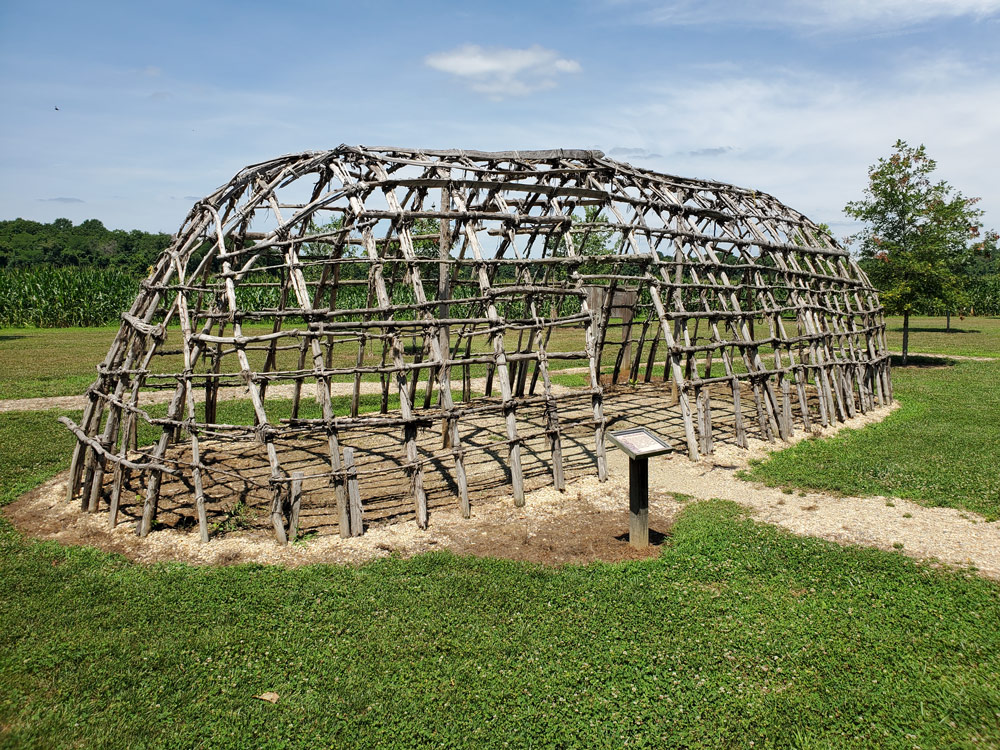

The Piscataway and the landscape they left behind
The history of the land that became Bowie begins before the arrival of the English colonists, and before the Ogles, Taskers, and Bowies who give this chapter most of its names.

Replica Woodland Indian longhouse frame at the American Indian Village, Patuxent River Park, Upper Marlboro — approximately twelve miles south of Bowie on the Patuxent River. The park occupies land within the traditional Piscataway homeland. Photo by the author, July 2021.
Archaeological studies along the Patuxent have identified over 80 sites of interest, documenting continuous human habitation stretching back 11,000 years. Just north of Jug Bay at Pig Point, excavations uncovered some of the oldest structural remains in the Mid-Atlantic states — wigwam post holes dating to the third century, pottery, arrow and spear points, and remnants of fires and foodways at what was probably a regional center of trade. The people who built those fires were the ancestors of the Algonquian-speaking confederacy the English would call the Piscataway — and whom the English would displace within a single lifetime.
By the early 17th century, the Piscataway were the largest and most powerful tribal nation in the lands between the Chesapeake Bay and the Potomac River, with a population of 7,000 or more. Their territory included present-day Southern Maryland and extended north into Baltimore County and west toward the Appalachian foothills. They were not a single tribe but a confederacy — Algonquian-speaking communities known by names such as Choptico, Mattawoman, Nanjemoy, Potapaco, Yaocomaco, and Zekiah, organized into an alliance under the Piscataway Tayac, or paramount chief. The Patuxent River corridor — the spine of what is now Prince George’s County, and the eastern boundary of modern Bowie — ran through their territory. When Captain John Smith mapped the region in 1608, he particularly noted the settlements of the Acquintanacksuak, Pawtuxunt, and Mattapanient peoples along the Patuxent and Jug Bay.
In 1634, the Ark and Dove arrived carrying Maryland’s first English colonists, including Governor Leonard Calvert and Jesuit priest Father Andrew White. The Piscataway welcomed these colonists and anticipated a mutually beneficial relationship with a new trade network. The first decade was a period in which both cultures benefited from each other’s knowledge — the Piscataway taught the colonists what crops to plant and when, as well as techniques for harvesting fish and shellfish, hunting, and trapping for furs. That period of cooperation did not survive the colony’s growth. By the 17th century’s end — in the span of a single lifetime — waves of settlers, smallpox epidemics, broken treaties, and the relentless loss of land had all but erased the Piscataway language, ways, and people from this landscape. In 1697, the Piscataway relocated across the Potomac into Virginia; by 1699 they had moved north to Heater’s Island in the Potomac near Point of Rocks. In December 1704, a smallpox epidemic struck their settlement there, killing at least 57 men, women, and children. The following year, the Piscataway Tayac failed to present himself to the Maryland Governor to renew Articles of Peace — one of the last mentions of the Piscataway in the official records of Maryland. John Bowie Sr. arrived from Scotland in 1705 and settled near Nottingham on the Patuxent. The land he farmed had been Piscataway territory within living memory — but the people were gone.
What they left behind — in the ground and on the map
The most tangible Piscataway legacy in the landscape around Bowie is linguistic. The river that defines the eastern boundary of Prince George’s County carries a Native American name: Patuxent, derived from the Algonquian language, with its meaning debated — some sources translate it as “water rolling over loose stones,” others as “the place where tobacco grows.” The Bowie family’s estate name, Mattaponi, is equally Algonquian: in Algonquin, matta means “joined” or “junction” and apo means “water” or “current” — giving the combined meaning of “meeting of waters at a sand spit.” The name appears across Maryland and Virginia wherever Algonquian-speaking peoples described confluences of water. When the Bowie family named their estate Mattaponi, they were preserving an Algonquian word in the landscape while the Algonquian speakers themselves had vanished from it.
The scarcity of Native American river names near Annapolis is notable. The Severn and the South River, the two principal rivers at Annapolis, carry English names. Compare this to Virginia, where the Rappahannock, Mattaponi, Pamunkey, and Chickahominy survive as Native American names. The Chesapeake Bay itself, along with the Patuxent, Potomac, and Susquehanna, all carry Algonquian names — evidence of the tribes that once resided along them. Near Annapolis, where English settlement took hold earliest and most completely, the renaming was thorough. The Patuxent’s survival as an Indian name is itself a marker of where English settlement arrived later and left more of the original geography intact.
Where to encounter this history today
The most accessible sites for understanding the Native American presence along this stretch of the Patuxent are all located south of Bowie, reflecting where the evidence is richest.
Patuxent River Park — 16000 Croom Airport Road, Upper Marlboro. Approximately twelve miles south of Bowie. A replica American Indian village introduces visitors to the architectural, technological, and agricultural traditions of Maryland’s indigenous peoples, and the park hosts an annual American Indian Festival. · Map
Jug Bay Wetlands Sanctuary — 1361 Wrighton Road, Lothian. Anne Arundel County side of the Patuxent, opposite the park. Archaeological studies have identified nearly 25 sites spanning at least 12,000 years of Native habitation — nearly the entire length of human existence in Maryland. · Map
Mount Calvert Historical and Archaeological Park — Part of the Patuxent River Park system, on the western Patuxent shore at the head of Jug Bay. The site was the first county seat of Prince George’s County, from 1696 to 1721, and today the house museum contains exhibits on the intertwined local history of tobacco growing, slavery, and pre-colonial Native American settlements. Active archaeological excavations are underway. · Map
Piscataway Park / Moyaone — Bryan Point Road, Accokeek. The historic capital of the Piscataway confederacy, on the Potomac’s eastern shore in Prince George’s County. A dig in the 1930s revealed human habitation dating back 6,000 years, with later evidence indicating Native American presence between 12,000 and 15,000 years ago. The Accokeek Creek site is a National Historic Landmark. · Map
The Nottingham archaeological site — referenced later in this chapter — is listed on the National Register of Historic Places for its documentation of more than 5,000 years of human presence on a Patuxent terrace. These places together represent the people in whose landscape the Ogles, Taskers, and Bowies arrived and built their estates — people who were here for ten thousand years before a single English ship entered the Chesapeake.
Belair Mansion and the Ogle governors
The estate that anchors Bowie’s entire historical identity — colonial, equestrian, and suburban.
Three governors, one house

Belair Mansion, c. 1742–1747 — south (garden) façade. Now a City of Bowie museum. Photo via Wikimedia Commons.
Belair Mansion was built between approximately 1742 and 1747 for Governor Samuel Ogle and his wife Anne Tasker Ogle — and the story of how it came to be built is itself a tale of colonial Maryland’s interlocking family and political connections. In March 1737, Ogle and his associate Benjamin Tasker Sr. jointly purchased the Belair tract for £500; Ogle bought out Tasker’s half that same August and became sole owner. Four years later, in July 1741, Ogle — then 47 years old — married Tasker’s daughter Anne, who was 18. When the couple traveled to England in early 1743, it was Benjamin Tasker Sr. who remained behind to supervise construction of Belair on their behalf, building the mansion for his own daughter and son-in-law while they were abroad. The Ogles returned in early 1747 to occupy the finished house.
The mansion is the physical core of what became the most celebrated thoroughbred racing estate in the colonial and early American world — and today the centerpiece of Bowie’s historical identity. It is listed on the National Register of Historic Places.
Three governors associated with Belair
In colonial Maryland, the Lord Proprietor — Lord Baltimore, of the Calvert family — held ultimate authority over the province but governed almost entirely from England, appointing Proprietary Governors to act in his name. Samuel Ogle (c. 1694–1752) served as Proprietary Governor in three non-consecutive terms from 1731 to 1752 and is the mansion’s builder. Benjamin Tasker Sr. (c. 1690–1768) — Ogle’s father-in-law, business partner, and construction supervisor — served briefly as Proprietary Governor from 1752 to 1753 following Ogle’s death, until a successor arrived from England. Samuel’s son, Benjamin Ogle (1749–1809), served as Maryland State Governor from 1798 to 1801 — a generation after independence had ended the proprietary system entirely. Belair’s historical marker describes the mansion as the “House of Governors” for this reason.
Architecture — a five-part Georgian landmark
The building is a five-part Georgian (Palladian) structure of brick, three stories tall with a full basement. The principal south-facing garden façade is seven bays wide, with the central three bays set in a 2½-story pedimented pavilion featuring a bull’s-eye window in the pediment. Four chimneys support nine fireplaces throughout the house. The south façade is laid in Flemish bond with glazed headers; the other three elevations are English bond. A heavy modillion cornice runs on all four elevations, and the roof follows a hip-on-hip plan. The south entrance is framed by a pedimented door with dentil molding and fluted pilasters; the north entrance has a full pedimented portico with tapered Ionic columns. Interior partition walls are brick and the floor plan has remained largely unaltered since construction. The south hall features a plaster medallion chandelier; both central halls display Federal-period detail from an early 19th-century renovation. The full architectural record is documented in the NRHP Nomination Form (NPS, 1976), which provides precise masonry, fenestration, and floor plan descriptions.
The original central block stood alone for over 150 years. James T. Woodward, who purchased Belair in 1898, added the west wing and hyphen. After his death in 1910, his nephew William Woodward Sr. completed the composition by adding the east wing and hyphen before 1914, bringing the mansion to its current five-part form. The expansion was designed by the prominent New York firm Delano & Aldrich and is considered a noted work of that practice. Each wing is three bays wide and two stories tall with a hip-on-hip roof; the one-bay hyphens connecting them to the main block repeat the exterior detailing of the original structure.
The Annapolis connection — Ogle Hall
Governor Ogle maintained two residences. Belair was the family’s country seat; in Annapolis he leased Ogle Hall at 247 King George Street as the official governor’s townhouse during the legislative season. His son, Governor Benjamin Ogle, continued to divide time between the two properties and entertained George Washington at the Annapolis house in 1773. The Ogle family connection to the Hall lasted until 1815; it subsequently became the U.S. Naval Academy Alumni House and was sold to private investors in 2021.
Visiting today — mansion, stables, and video resources
Both Belair Mansion (12207 Tulip Grove Drive) and the Belair Stable Museum (2835 Belair Drive) are operated by the City of Bowie. Self-guided tours are available Friday through Sunday, 12 to 4 p.m., with free admission (donations welcomed). The Mansion’s collection spans the full arc of the estate’s occupation from 1747 to 1950, with period furnishings and artifacts from both the Ogle and Woodward eras — including a Colonial Revival card table owned by William Woodward, an 18th-century portrait of Colonel Benjamin Tasker, family silver, and the “Paintings of the Seasons” given to Samuel Ogle by Maryland’s Proprietor, Lord Baltimore. The Stable Museum highlights 200 years of Belair bloodstock and includes a restored 1923 Stablemaster’s living quarters.
The City of Bowie has also produced a series of official videos covering the mansion’s history and virtual room-by-room tours, available on the Belair Mansion city page.
An author’s note. If you have any interest in Belair Mansion’s history, the author strongly recommends watching Three Lives of Belair Plantation by Dr. Jim Gibb, a PhD archaeologist who directs the Environmental Archaeology Laboratory at the Smithsonian Environmental Research Center and has researched and published on patterns of wealth among 17th-century Chesapeake planters. It is an hour-long presentation packed with detailed historical information, rare photographs of the mansion and Ogle Hall, and firsthand accounts of the archaeological work conducted on the grounds — a level of depth you simply won’t find anywhere else on the subject. The video has surprisingly few views on YouTube for the quality of its content.
Rochambeau’s column passes Belair
In September 1781, the French army's final Maryland encampment before Yorktown was at Belvoir, or Scott's Plantation, near present-day Crownsville, where it camped on September 16–17. From there, the column divided: the infantry continued east to Annapolis, where they boarded nine French transports from de Grasse's fleet and sailed for Yorktown. The wagon train and heavy artillery took a different route, since the transports could carry infantry but not hundreds of wagons or the horses and oxen needed to move the army's heavy equipment overland. The author believes the wagon train diverged near what is now Parole and headed northwest on what would later become Route 450 toward the Patuxent River crossing, while the troops continued east into Annapolis. Under escort of the cavalry of the 2nd Lauzun Legion, the wagon train consisted of approximately 220 wagons and artillery pieces drawn by roughly 1,500 horses and 800 oxen, and it marched through what is now Bowie.
The most precise primary record of this march comes from Louis-Alexandre Berthier, Rochambeau’s assistant quartermaster-general, whose annotated road itineraries document both where the column rested and what it saw on the way out. The train camped at John Easton’s Plantation, approximately one half mile west of the Patuxent River crossing known as Priest Bridge — where Maryland Routes 3 and 450 jointly cross at the Prince George’s–Anne Arundel county line. Berthier’s itinerary records the departure: the road from Easton’s rejoins the Georgetown Highway “200 paces (1/4 mile) farther on,” and then — “You pass quite a fine house on the left.” That fine house on the left was Belair Mansion. The W3R survey by Reyes and Fry (2001) confirms this routing, drawing on Berthier and the Rice–Brown edition of the French campaign journals. The artillery component of the train was under the command of Thomas-Antoine de Mauduit du Plessis, senior adjutant of the French artillery park — a detail explored further in the author’s Rochambeau route visualization.
The full documented sequence for the wagon train is: Belvoir / Scott’s Plantation (Crownsville) → split at Parole [infantry east to Annapolis; wagon train northwest on what is now Route 450] → Patuxent crossing at Priest Bridge → camp at John Easton’s Plantation (half mile west of the river) → Sacred Heart Church → Belair → Bladensburg → Georgetown ferry. The large herd of oxen had to ford the river separately at Little Falls, three miles upstream from the ferry.
The lost campsite. John Easton’s Plantation has vanished entirely from the landscape and from the secondary literature; it survives only in Berthier’s road notes and the scholarly apparatus that surrounds them. No deed abstracts, tax records, or genealogical sources for the Easton family in this part of Prince George’s County have been identified in publicly accessible indexes, and the property has not been located on any surviving colonial-era plat. What the geography does tell us is suggestive: a half mile west of Priest Bridge on the old Annapolis road places the campsite in the corridor between the bridge approach and Sacred Heart Church. That corridor — historically described as a “long stretch of sandy loam between the church and the Patuxent River and marsh” — today includes the City of Bowie transfer station and surrounding land east of Sacred Heart. It is possible that Easton held land here as a smaller planter within or adjacent to the vast Jesuit White Marsh tract, which by 1781 encompassed some 2,000 acres in this neighborhood. The author also notes, purely speculatively, that the name “Priest Bridge” for the Patuxent crossing at this location may itself reflect the Jesuit presence: the White Marsh priests were the most prominent landowners between Annapolis Road and the river, and a bridge on or near their property would have been a natural candidate for the name. This connection has not been documented in any source the author has located, but the geographic logic is compelling. Recovering the full story of Easton’s Plantation — who the Eastons were, when they held this land, and what became of the property — would require original research in the Prince George’s County deed and probate records at the Maryland State Archives.
An author’s note. This passage remains one of the most dramatic and under-appreciated moments in Bowie’s history, tying the ground beneath a modern Maryland suburb directly to the campaign that ended the Revolutionary War. It is also a reminder of how little of this route is marked on the ground today — the absence of historic markers in Bowie and Prince George’s County tracing the wagon train’s path through the corridor from Priest Bridge to Belair to Bladensburg is a gap that deserves to be filled.

Modern living-history encampment photo used as a thematic illustration; not a period image.
Slavery, resistance, and freedom at Belair Mansion
Belair’s wealth and reputation rested in part on the labor of enslaved people for more than a century. Their story is documented, and it is inseparable from Bowie’s history.
45–66 enslaved people — and a century of flight
Belair Mansion was a working tobacco plantation. During the Ogle family years, between 45 and 66 enslaved people worked the estate at any given time. The Prince George’s County African American Heritage guide notes that for more than 100 years, the Ogle and Tasker families struggled to keep their enslaved people from running away — evidence of repeated resistance and attempted escape.
The Maryland State Archives maintains a dedicated research project — Belair at Bowie: Flight to Freedom — documenting the complexities of enslavement in this community between 1830 and 1860 through primary sources: runaway slave advertisements, court records, and census documents. Prince George’s County held more enslaved African Americans than any other county in Maryland, and had fewer free Black residents — the geography of a county with enormous plantations and very limited free Black community structure.
Enslaved African Americans were also central to Belair’s racing identity, though largely invisible in formal records. The Belair Stable Museum’s featured exhibit on African American jockeys acknowledges their role as horsemen, riders, and trainers — the skilled labor behind the horses whose names history remembers.
41 freed — and an estate that collapsed under its own weight
When Maryland’s 1864 constitution abolished slavery in the state, George Cooke Ogle reported to the Commissioner of Slave Statistics that he had freed 41 enslaved people, 24 of them 18 years or younger. The sudden loss of the unpaid workforce that had sustained Belair for generations proved fatal to the estate’s finances. As one historian summarized: plantations were “possessed of huge tracts of land but suddenly without the built-in workforce to make them productive — they were often unable to meet mortgage debts or to pay taxes.”
By 1871, George Ogle had defaulted on a debt of $2,400 to the estate of Maria Jackson. The court ordered Belair sold. It was described in the auction notices as “550 acres, more or less, and one of the finest farms in Prince George’s County.” The Ogle family’s 130-year connection to Belair ended not because of a single dramatic episode, but because the plantation could no longer operate on the old economic model once slavery was abolished. For the 41 people freed in 1864, emancipation meant a long-delayed change in legal status and possibility; for the estate, it marked the end of the plantation era at Belair.

Belair Mansion historical marker. Photo via Wikimedia Commons.
The Bowies of Prince George’s County: A Family That Named a City
Five generations of one Scottish-immigrant family — lawyers, soldiers, planters, and politicians — became so thoroughly embedded in the soil and governance of Prince George’s County that, in 1880, the Maryland legislature renamed the town of Huntington, “Bowie” in honor of Governor Oden Bowie, whose name the railroad station already carried.
Partial Bowie family tree (visual diagram) →
A name worth pronouncing correctly
Before the history begins, the pronunciation deserves a word — because visitors who arrive here knowing the name from the radio almost certainly say it wrong.
In Prince George’s County, the name is Boo-ee. Always has been. The city of Bowie is pronounced “Boo-ee.” Oden Bowie Drive, which runs past Dr. William Beanes’ tomb in Upper Marlboro, is “Boo-ee Drive.” Ask anyone who grew up here. This is not an eccentricity of local habit — it is the correct Scottish Gaelic pronunciation of the original name. Bowie is a Scottish and Irish surname, derived from the Gaelic nickname buidhe, meaning “yellow” or “fair-haired.” In Scots Gaelic, buidhe is pronounced roughly as “boo-ee” — the same vowel heard in the Scottish liqueur Drambuie, whose suffix comes from the same root word.
Which brings up the inevitable question: what about David Bowie, the rock star? His real name was David Jones. He chose Bowie as a stage name after the American pioneer Jim Bowie, whom he encountered through the historical film The Alamo — reportedly because he wanted a “cutting” name, like a knife. In a 2000 BBC interview he reflected that the Scots say the name “boo-ee” and suspected he had been mispronouncing it from the start. There is no genealogical connection between David Bowie and Maryland’s Bowie family — they share only a Scottish surname that one of them mispronounced.
The Mullikens come first
The name you see on land records, road signs, and building dedications across northern Prince George’s County almost as often as Bowie is Mullikin — spelled variously as Mulliken, Mullican, or Mullikin across different branches and generations. The two families are linked from the very beginning of the Bowie presence in Maryland.
James Mullikin first appears in Maryland records in 1660, arriving as a transported planter who settled in Calvert County on the Patuxent River. His son James Mullikin II settled in Prince George’s County, and the family took deep root there across the next several generations. James Mullikin II’s daughter Mary Mullikin (born 1685) married John Bowie Sr. — the first Bowie in Maryland — shortly after his arrival from Scotland between 1705 and 1706, settling near Nottingham in Prince George’s County on the Patuxent River. The Bowie presence in Prince George’s County therefore begins not with a solitary Scots immigrant but with a marriage into one of the county’s already-established planting families. Mary Mullikin brought the Bowie family into a social network it would inhabit and dominate for the next two centuries.
The Mullikin family’s presence remained woven through the local landscape long after that founding marriage. Williams Plains, the historic brick plantation house now preserved in Whitemarsh Park in Bowie, was begun by Judge John Johnson around 1813 and completed a generation later as the home of the Basil Mullikin family. The Mullikens also appeared at a decisive moment in the history of Belair itself: when the last Ogle owner of Belair defaulted on a debt owed to the estate of Maria Jackson, James Mullikin — executing that estate — filed suit and the court ordered Belair sold — an outcome that ultimately set the estate on the path toward the Woodward era. A family that had arrived in Maryland two centuries earlier, and whose daughter had given the Bowie family its first foothold here, left its final mark on the county’s greatest estate.
The Mullikin name persists on the ground in two forms that most Bowie residents pass without recognition. Mullikin Elementary School — named for the Mullikin family — stood on Mount Oak Road, the road that now marks the boundary between the Pointer Ridge and Northview neighborhoods. It was a three-story concrete building housing grades one through six, but it did not stand alone: it belonged to what was once a little hamlet at Mullikin, a modest crossroads community that included a nearby post office, an American Railway Express station along the adjacent Pope’s Creek railroad track, and, in earlier years, a hotel, a blacksmith shop, and the station master’s home. The school closed after the 1963–64 school year; a later fire in the vacant building led to its demolition, and the property now serves as a school bus lot, its earlier role as a community crossroads largely forgotten by passing motorists. A few hundred yards away, at the corner of Mount Oak and Mitchellville Roads, the Mitchell Family Cemetery sits in a small plot maintained by the City of Bowie — the graveyard of John Mitchell, for whom Mitchellville was named, preserved within South Bowie while most residents scarcely know it is there.
The Sprigg marriage and a second dynasty
The Bowie family’s rise was not achieved in isolation. In 1745, Captain William Bowie — son of John Bowie Sr. and Mary Mulliken — married Margaret Sprigg, daughter of Osborne Sprigg of Prince George’s County, bringing the Bowies into alliance with one of the county’s most deeply established English families. The Sprigg dynasty traces to Thomas Sprigg Sr., who arrived in the Chesapeake around 1650 and eventually settled a thousand-acre tract in what became Prince George’s County, which he named “Northampton” — a deliberate echo of the English county his family came from. The alliance ran so deep that Captain William Bowie and Margaret Sprigg named one of their sons Osborn Sprigg Bowie — a name that encoded both lineages in a single person. The Spriggs, like the Bowies, produced congressmen and a governor: Samuel Sprigg of Northampton was among the five Prince George’s County men elected Governor of Maryland in the early nineteenth century.
The Duckett alliance
No account of the Bowie family is complete without the Ducketts. The two families were bound together by marriage so repeatedly, across so many branches, that their genealogies are essentially inseparable. Richard Duckett Sr. (born 1675) was the first of the Duckett name to settle in Maryland. His descendants put down roots in Prince George’s County across the same decades as the Bowies, and the intermarriage pattern was remarkable: Thomas Duckett (born 1744) married Priscilla Bowie; his brother Baruch Duckett (born 1745) married Mary Bowie Beanes; their brother Dr. Isaac Duckett (born 1753) married Mary Bowie. Three Duckett men married into the Bowie family in a single generation.
Baruch Duckett, who had served as a lieutenant in the Revolutionary War, had Fairview Plantation built about 1790 on part of the tract Darnall’s Grove. Upon his death in 1810 he left the estate to his son-in-law Captain William Bowie. When that William Bowie and Kitty Beanes Duckett had their eldest child, they gave him the middle name Duckett — a common colonial Maryland gentry practice for honoring maternal inheritance. Colonel William Duckett Bowie (1803–1873) was the eldest child of William Bowie and Kitty Beanes Duckett, born at Fairview Plantation in Prince George’s County. His middle name preserved the Duckett lineage in the Bowie line. This is how Fairview passed from a Duckett plantation to a Bowie family seat, while carrying the Duckett name forward into the generation that would charter a railroad and put the family name on the map. The Duckett name persists today in Duckettown Road in the Old Bowie/Huntington area.
The other inheritance
The Bowie family’s political and genealogical story cannot be told honestly without acknowledging its scale as a slaveholding enterprise. The 1860 Federal Census Slave Schedule records that Oden Bowie enslaved 103 individuals — 53 men and 50 women, ranging in age from six months to seventy years. His relative Walter W. Bowie enslaved 28 more. The Fairview plantation ran on enslaved labor across its entire history under both the Duckett and Bowie families.
One name from this history survives with particular force. Rezin Williams Sr., who was enslaved at the Bowie family’s Mattaponi estate, later served George Washington as a hostler at Mount Vernon during the Revolution. His son, Parson Rezin Williams, born at Fairview in 1822, became a bishop of the Union American Methodist Church. Parson Williams’ account records that the enslaved people at Mattaponi lived in cabins made of rough slabs, worked from sunrise to sunset, had no money, and were forbidden by most masters from attending religious meetings or learning about the Bible. Father and son — one a Washington hostler, one a bishop — represent a thread of this family’s history that is rarely told alongside the governors and congressmen.
The founding families and the Ark and Dove
These families were not part of Maryland’s founding Catholic gentry — the proprietorial class that arrived on the Ark and Dove in 1634. None of the Bowies, Mullikens, Spriggs, Ducketts, or Beanes family appear on the 1634 passenger lists. They arrived in Maryland’s second and third waves of settlement, between 1650 and 1705, and built their position through land acquisition, strategic marriage, and persistent service in county and state government across the following century. That is, in some ways, a more interesting story — not the story of founding privilege but of deliberate accumulation.
Nottingham — the world the Bowies came from
The Bowie family’s seat was not Bowie, Maryland. For their first century in America, it was Nottingham — a name that has nearly vanished from the county landscape but once represented one of the most consequential places on the Patuxent River. Established by the Maryland General Assembly’s Act for the Advancement of Trade in 1706, the town occupied fifty-five acres on the river and grew into a major tobacco shipping point: between 1791 and 1801 alone, more than 8,340 hogsheads of tobacco — each holding 400 to 500 pounds, enough to fill dozens of oceangoing vessels — cleared its wharves. Governor Robert Bowie’s primary adult residence was “The Cedars,” his home in Nottingham proper on the river’s edge.
That Nottingham mattered is evident from who passed through it on serious business. George Washington stopped there overnight, using the ferry to cross the Patuxent. When the British marched on Washington in August 1814, then-Secretary of State James Monroe led a thirty-man cavalry scouting force through Nottingham specifically to observe their movements — choosing it as a vantage point because it sat astride the route. These were not casual visits; they were the footprints of a town that occupied a real position in the road and water network of the early republic.
The decline came steadily through the nineteenth century. The Patuxent grew too shallow for large vessels, Baltimore drew the shipping trade north, and Nottingham contracted with each passing decade. The town that had once hosted a general and a Secretary of State on urgent wartime business is now a handful of houses along a river road in Croom. No eighteenth-century buildings survive. What remains of Nottingham is largely beneath the surface — the archaeological site on a terrace of the Patuxent, preserving more than 5,000 years of human presence, is listed on the National Register of Historic Places. The Bowie family’s world for four generations exists now mostly as soil.
Governor Robert Bowie and the Star-Spangled Banner
Robert Bowie, the third son of Captain William and Margaret (Sprigg) Bowie, was born at Mattaponi near Nottingham in March of 1750. He eloped at twenty with Priscilla Mackall — she reportedly not yet fifteen. Historians would later describe him as “ardent and impulsive, bold and romantic, never flinching in the presence of obstacles” — and the elopement suggests he was consistent from youth to old age.
Robert Bowie served three terms as Governor of Maryland beginning in 1803, being re-elected in 1804 and 1805, and again from 1811 to 1812.
When the British marched on Washington in August 1814, their column passed through Upper Marlboro, where they found the town largely deserted. The army requisitioned as overnight headquarters the finest residence in town — the home of Dr. William Beanes, a prominent local surgeon and planter. Beanes gave his British guests a strong impression of sympathy; a postwar memoir by a British officer noted he was most hospitable and had given assurances of non-interference. What the British did not know was that Beanes had secretly hidden Maryland state records on his property for safekeeping, fearing the British would burn the capital at Annapolis. The man welcoming General Ross to his parlor was simultaneously concealing the state’s documents in his house.
After burning Washington, the British withdrew south, and stragglers fanned out to loot the farms along their route — including the Mattaponi estate of former Governor Robert Bowie, now 64 years old and retired near Nottingham. Bowie, enraged at the ransacking of his farm, is reported to have called on his neighbors to help track down the stragglers — though no contemporaneous record of his words survives. At some point in the sequence, Doctors William Beanes, William Hill, and Philip Weems took it upon themselves to capture the miscreants and send them off to be confined in Queen Anne City.
One of the prisoners escaped and reported back to General Ross, who now saw Beanes’ earlier hospitality as deliberate treachery. Ross immediately ordered the seizure of Beanes, Bowie, Hill, and Weems; British cavalry took all four shortly after midnight. After interrogation, Bowie and the others were released as non-combatants. Beanes alone was taken back to HMS Tonnant — held on suspicion that his earlier hospitality had been a deliberate act of intelligence gathering.
Dr. Beanes’ friends implored Georgetown attorney Francis Scott Key to negotiate his release. Key gathered letters from British wounded who had received kind treatment from American doctors, boarded a flag-of-truce vessel under President Madison’s authorization, and dined as a guest of the British fleet’s senior commanders. Beanes was ultimately freed — but Key’s party was detained during the bombardment of Fort McHenry on the night of September 13–14, 1814. The poem Key wrote watching the American flag still flying at dawn became “The Star-Spangled Banner.”
A note worth making explicit: the Robert Bowie whose farm was ransacked was the former governor, not his nephew Colonel William Duckett Bowie, who was only about ten years old in 1814. That confusion appears occasionally in secondary sources. Robert Bowie died on January 8, 1818, and was buried in the family cemetery at Mattaponi.
A dynasty in the legislature — and why the historians get confused
The legislative record for 1790 makes the Bowie political dominance vivid: in that single year, the Prince George’s County delegation to the Maryland House of Delegates included Fielder Bowie, Robert Bowie, and Walter Bowie simultaneously. In 1796 and 1797, “Allen Bowie Duckett” appears in the same delegation — another hyphenated Duckett-Bowie name, another generation of the alliance.
Walter Bowie was born at Mattaponi, near Nottingham. His father, Captain William Bowie, bought him a large farm near Collington — known originally as “Darnell’s Grove” and later as “Locust Grove” and “Willow Grove.” He served as captain and then major of a Prince George’s County company during the Revolution, was a member of the Maryland House of Delegates from 1780 to 1800, and was elected to the U.S. Congress to fill the vacancy caused by the resignation of Richard Sprigg Jr. — yet another Sprigg vacating a seat to a Bowie.
Walter Bowie’s farm near Collington — nearly a thousand acres on what is now Route 450 (Annapolis Road) — sits within the heart of modern Bowie. The manor house burned in the 1970s, but the Bowie family cemetery survives on the south side of Annapolis Road, across from Holy Trinity Episcopal Church, on private land unmarked to passing traffic. Buried there — or at Holy Trinity itself, where some graves were later moved — is Lieutenant Walter Bowie (1837–1864), great-grandson of the Congressman: a Confederate cavalry raider killed not by Union soldiers but by a posse of fifteen angry citizens near Rockville, shot in the face by a carriage maker who had hidden behind a tree. His stone reads: “Captain, C.S.A., killed near Rockville, Md.” The family that had helped produce the Star-Spangled Banner had, two generations later, sent a son to fight against the country it inspired.
Thomas Fielder Bowie (1808–1869) — grandson of Governor Robert Bowie, grandnephew of Congressman Walter Bowie — graduated from Union College in 1827, where he helped found the Sigma Phi fraternity, was brother-in-law to Reverdy Johnson (U.S. Senator, Attorney General under Zachary Taylor, and later defense counsel in the trial of Mary Surratt), served as U.S. Representative for Maryland from 1855 to 1859, and made an unsuccessful run for Governor of Maryland in 1843. He was the last of the Bowies to reach for the governor’s chair — and missed. The family that had held the office three times could not manage a fourth.
The Bowie family had a pronounced habit, common among colonial Maryland gentry, of recycling a small stock of given names across generations — Robert, William, Walter, and Thomas appear over and over, attached to men of different generations and different branches, sometimes simultaneously. The safest rule when reading sources about the Bowies of Prince George’s County: always establish the date first, and work backward to the man.
Governor Oden Bowie and the naming of the city
Oden Bowie was born at Fairview Plantation on November 10, 1826. After a decorated Mexican War service, he returned to Fairview, entered Maryland politics, and became the first president of the Baltimore and Potomac Railroad. In 1880, Huntington City was rechartered as Bowie, named for the former Governor and then-president of the Baltimore and Potomac Railroad. The fuller account of his railroad career and legacy appears in Chapter 2 — Railroad Era.
When the railroad junction needed a name in 1880, the county had one ready — not because of a single famous man, but because there had always been Bowies here.
The Bowie knife — legend and uncertainty
No article about the Bowies of Maryland can entirely ignore the most famous name associated with the family — though the connection remains unresolved. According to family lore, Colonel James Bowie, the inventor of the Bowie knife and hero of the Alamo, was directly related to Maryland’s Bowie family. Some family traditions say that a James Bowie left Maryland in 1760 and settled in South Carolina, where he fathered Rezin Bowie, the father of Colonel James Bowie. Other traditions suggest James Bowie died around 1760 and that there is no provable connection. The Maryland State Archives record the claim but cannot confirm it.
Historic sites associated with the Bowie family
Mattaponi (John Bowie Jr. House) — Near Croom, three miles northwest of Nottingham. Built c. 1820 on the foundation of the original 1730s house. Birthplace and burial site of Governor Robert Bowie. Private land, not publicly accessible. · Map
Fairview Plantation — Within the Fairwood development, off Fairwood Parkway. Built c. 1790 by Baruch Duckett; home of Governor Oden Bowie. The historic house survives on approximately ten acres amid the modern subdivision. The Bowie Family Cemetery is on site. · Map
Willow Grove / Bowie Family Cemetery — South side of Route 450 (Annapolis Road), across from Holy Trinity Episcopal Church, Bowie. Former Walter Bowie plantation; manor house burned 1970s. Cemetery survives on private land. Documentation held by the Historic American Buildings Survey, Library of Congress. · Map
Bowieville — Leeland Road, near Upper Marlboro. A Federal-style mansion built c. 1820 for Mary Mackall Bowie, daughter of Governor Robert Bowie. Private land. · Map
Nottingham Archaeological Site — Along the Patuxent River in Croom. Listed on the National Register of Historic Places, 1975. The former colonial port town where the Bowie family’s American story began is now preserved primarily in its archaeology. · Map
Dr. William Beanes Tomb — Corner of Governor Oden Bowie Drive and Elm Street, Upper Marlboro. Marked with a bronze plaque placed by MedChi in 1914 and an additional plaque placed by the Daughters of the War of 1812 in 2013. · Map
More places in Bowie’s early story
A few additional buildings and sites that round out the colonial picture — documented in the Illustrated Inventory of Historic Sites and Districts and familiar to the author of this page.
Williams Plains — 71B-003 · Whitemarsh Park
A two-story brick plantation house of Georgian plan begun circa 1813 and completed around 1840, Williams Plains stands today within Whitemarsh Park. Built for Judge John Johnson and later home to the Mullikin family, it is one of the quieter historic anchors in what is now a recreational landscape — a reminder of how much early-19th-century country remains under later park and subdivision layers.
Sacred Heart Chapel and the White Marsh cemetery
Sacred Heart Chapel, also known as White Marsh, is one of the oldest surviving Catholic sites in the Bowie area and stands along Annapolis Road west of Crain Highway. The chapel and its surrounding cemetery occupy ground tied to the much larger White Marsh plantation, a major Jesuit property in colonial and early national Maryland.
The site’s significance extends beyond the chapel building itself. Recent archaeological and documentary work has identified large numbers of unmarked graves in the cemetery area, including burials associated with enslaved people and their descendants who lived and worked on the White Marsh property. The cemetery is therefore one of the most important surviving burial landscapes in Bowie, standing as a reminder that the city’s history includes plantation Maryland, Catholic institutional history, and the lives of enslaved and free African Americans whose presence is not always obvious in the modern built environment.
Major Thomas Lancaster Lansdale Park — Revolutionary War
Major Thomas Lancaster Lansdale Park is a small city park on Collington Road (MD 197), opposite Bowie Town Center, built around the grave of Thomas Lancaster Lansdale (1748–1803). Lansdale served as a major in the 3rd Maryland Regiment during the Revolutionary War and later became associated with the Collington area that is now part of Bowie. The site is significant because it preserves the grave of the only known Revolutionary War veteran buried within the present-day city of Bowie — a direct physical link between modern commercial Bowie and the 18th-century landscape that preceded it.
Maple Shade, Boxlee, and the Bowie-Addison network — 71B-007 · Hillmeade Road
Sites like Maple Shade, Boxlee, and related houses in the Glenn Dale and Hillmeade Road area show the broader Bowie/Addison family landscape beyond Belair itself. Maple Shade evolved from an 18th-century farmhouse into a large 1890s main block; Boxlee, built for French Bowie Addison in 1923, is a Colonial Revival house in a garden devoted to azaleas. Together they hint at how the Bowie and Addison families spread across this part of the county in the 18th–20th centuries.